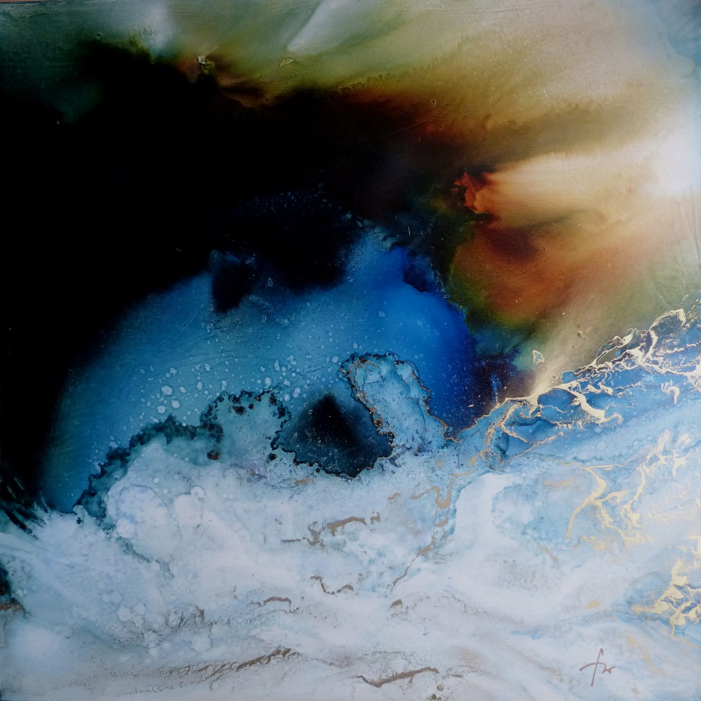
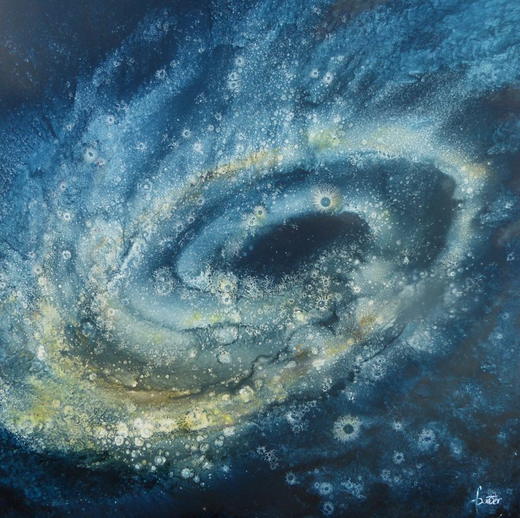

« Il convient de maîtriser l'aléatoire pour que l'improvisation, toujours présente, ait un sens. »
François Weber

Notice
François Weber partage sa vie entre la médecine et la peinture. Venu de l'aquarelle — celle qu'on travaille mouillée, où la couleur décide autant que la main —, il peint à l'huile depuis une vingtaine d'années, sur toile, sur bois et sur papier.
Il cherche des flous, des atmosphères sourdes, des effets de lumière. Ses univers sont célestes et marins, et la frontière y reste ténue entre l'abstrait et le figuratif : on croit reconnaître un horizon, une côte, une masse d'eau, puis la forme se dérobe.
Il expose depuis 1985.
